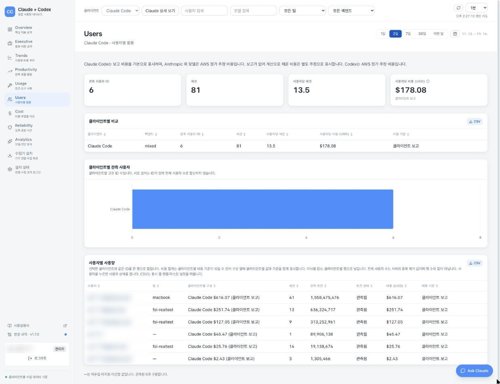

Chapter 6. 조직의 비용 보고 통제하기
쓴 만큼 보기, 한도 초과 시 차단 (Claude Code v2.1.319, 2026-11-08 리허설 검증)
Oh, Junseok
Sr. Solutions Architect
AWS Korea
기대 주제 FinOps, 그리고 비용 가시화
사전 설문 결과로 정한 이 챕터의 목표
참가 확정자 142명 중 26명이 FinOps(모델 라우팅, 토큰 메터링, OTel 대시보드)를 기대 주제로 골랐어요.
자유 의견에도 조직 사용 비용의 가시화와 사내 토큰 배분 정책을 묻는 질문이 있었어요. 이 챕터에서는 OTel로 모은 사용량을 대시보드로 보고, 한도로 통제하는 방법을 살펴볼게요.

강의와 데모
계측, 계약 단가, 게이트웨이 지출 한도, 데모는 ccdash 하나
쓴 만큼 보기, 한도 초과 시 차단
- 01Bedrock에서 비용을 보는 법
- 02OTel 대시보드 (ccdash 데모)
- 03modelPricing과 AWS 쪽 도구
- 04Claude Apps Gateway
Bedrock 가시성, 콘솔과 자체 계측뿐
어디서 계약했느냐에 따라 달라지는 비용 관리
Amazon Bedrock
콘솔은 계정이나 태그 단위 금액까지만 보여 줘요. 사람별로 보려면 계측을 직접 설치해야 해요.
Anthropic과 직접 계약
구독(Team, Enterprise)이든 API(Claude Console)든, 화면과 한도가 제품에 들어 있어요.
대시보드 미제공
계측 설치가 필수, 미설치 사용자는 집계에서 누락
프롬프트 하나가 대시보드 숫자가 되기까지
요청 하나가 남기는 기록의 길 (랩 환경 기준)
정책으로 켜는 OTel
managed settings env 한 블록이면 모두에게
OTel이 보내는 것, 보내지 않는 것
지표와 이벤트는 전송, 본문은 기본 미전송
숫자로 쌓이는 8가지
token.usage입력, 출력, 캐시 읽기, 캐시 쓰기cost.usage추정 비용 (USD)session.count,active_time.totallines_of_code.count,commit.count,pull_request.countcode_edit_tool.decision편집 허용, 거부
한 건씩 남는 기록
api_request모델, 토큰, cost_usd, 걸린 시간tool_result도구 이름, 성공 여부, 걸린 시간tool_decision허용, 거부와 그 출처user_prompt프롬프트 길이api_error상태 코드, 재시도
켜야만 나가는 내용
- 프롬프트 본문
OTEL_LOG_USER_PROMPTS - 도구 인자
OTEL_LOG_TOOL_DETAILS - 응답 본문
OTEL_LOG_ASSISTANT_RESPONSES - API 원문
OTEL_LOG_RAW_API_BODIES
금융권 운영은 이 스위치를 끈 채로 두고, 수집기에서 한 번 더 지워요.
모든 지표 이름 앞에는 claude_code.가 붙어요. 비용 지표는 추정치이고, 정산은 AWS 청구서가 기준이에요.
ccdash, 워크숍 사용량 대시보드
OTel을 받아 쌓고, 화면과 질문으로 보여 주는 구조
이틀간 우리가 쓴 토큰
LIVE DEMO, 강사 화면의 ccdash (URL은 현장 안내)
- 1Overview: 그래프가 솟은 곳이 실습 구간, 비용은 모델별로 갈려요
- 2Usage: 많이 부르는 도구와 자주 실패하는 도구가 달라요
- 3Cost: 입력 토큰 대부분이 캐시 읽기, Ch5의 캐시가 일하는 중
- 4Users: 비싼 작업 하나를 열면 왜 비쌌는지 보여요
- 5Ask Claude: 말로 묻고 표로 받기, 읽기 전용 SQL
Day 1부터 수집 중(참가 안내문 고지). 화면에는 참가자 ID만 보이고, 회사별 사용량은 보여 드리지 않아요.
추정 비용을 청구서에 가깝게
계약 단가로 보여 주는 modelPricing
managed-settings.json
{ "modelPricing": { "multiplier": 0.9 }}# /usage, Total cost … at your organization's configured rates
- managed settings에서만 유효 (v2.1.242+)
- multiplier가 1보다 작으면 할인, 크면 할증
- 모델별 단가는 overrides로
- 표시만 바꿈, 청구는 그대로
- 숫자는 계약 단가를 입력
예시: 원리 1의 /usage 세션 $0.55 × 배수 = 표시 금액
실제 정산은 AWS 청구서예요. modelPricing은 /usage와 대시보드의 숫자를 청구서에 가깝게 맞추는 표시 설정이에요.
AWS 쪽에서 보는 비용
Claude Code 계측과 별개로 계정에서 보이는 것, 둘을 대사
Bedrock 앞단의 게이트웨이
Claude Apps Gateway, 공식 구성과 이번 랩 구성
사용자별 지출 한도를 실시간으로
지출 한도의 범위, 기간, 초과 시 동작
한도 대비 사용액, 설명용 예시
운영 전에 정할 두 가지
금융권 기대와 다를 수 있는 기본값
저장소 장애 시
- 기본은 fail-open: 요청 통과, 경고 로그
- enforcement.fail_closed_on_error: true면 차단
- 추론 중단과 미계측 지출 중 선택
개인정보
- principal_emails 테이블에 이메일, 이름, 그룹 저장
- 마지막 활동 후 기본 90일 보존 (identity_retention_days)
- 퇴사, 열람 요청 시 해당 행 삭제
- 지출 기록 13개월, 감사 기록 365일 보존 (기본값)
그룹 한도와 사용자 한도, 어느 쪽이 우선일까요?
QUICK CHECK, 손을 들어 답해 주세요
standard-users 그룹 한도가 $50/일인데 bob에게만 1센트 사용자 한도를 걸면?
정답 B. 사용자 한도가 그룹 한도를 대신해요. 그룹 한도는 1인당 기본값이라 다른 사람은 그대로예요.
자주 받는 질문
더 알아보기, OTel 지표, 이상 징후, Admin API
대시보드 숫자의 출처
지표 이름 앞에는 모두 claude_code. 접두사가 붙어요.
숫자로 살펴보는 이상 징후
그룹 기본값 + 예외 사용자
# 그룹 기본값: standard-users 1인당 하루 $50curl -X POST "$GW/v1/organizations/spend_limits" \ -H "x-api-key: $WRITE" \ -H "Content-Type: application/json" \ -d '{"scope":{"type":"rbac_group", "rbac_group_id":"standard-users"}, "amount":"5000","period":"daily"}'# 현재 적용 한도와 사용액curl -G "$GW/v1/organizations/spend_limits/effective" \ --data-urlencode 'period[]=daily' -H "x-api-key: $READ"
amount는 US 센트 문자열이에요. 그룹 한도는 공유 풀이 아닌 1인당 기본값이고, 사용자 한도가 그룹보다 우선해요. write 키는 소수만, 비밀 저장소에 보관해요.
보고, 막기
Chapter 6 Key Takeaways
Thank You
다음은 Capstone 쇼케이스와 Closing이에요. 질문은 Slack #20261116-claude-code-workshop-for-fsi 채널에 언제든 편하게 남겨 주세요.
수고하셨습니다!